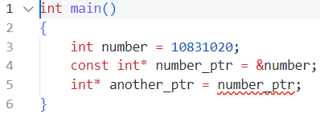
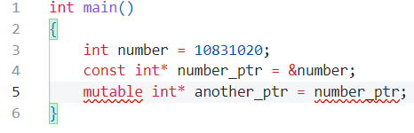
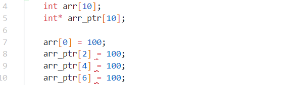
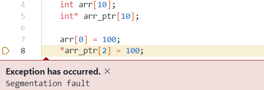
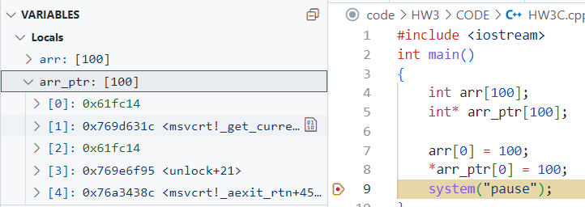
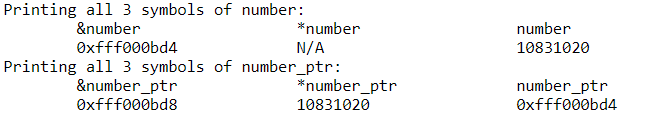
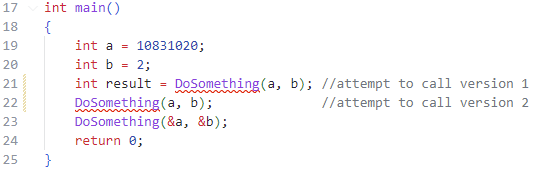

| 班級 | 姓名 | 學號 | 日期 |
|---|---|---|---|
| 四機械四乙 | 吳宇昕 | B10831020 | 10/6/2022 |
欲複製const pointer，必須將其儲存於另一個const pointer。若新的pointer並非const，則會產生compile time error。

原本預期c++的
mutable關鍵字可以暫時避免compiler設下的這道防護機制，強迫其將const int*複製給int*但是發現這樣做沒有用。看來mutable關鍵字是專門用來讓class裡的const函式修改class member用的，無法像我這樣使用。
變數被pass by value進到函式時，將會在該函示的stack frame裡產生其數值的副本。複製體積大的變數或物件時，將會耗費CPU資源以及記憶體空間。 若是pass by reference，函式接收到的是該物件或變數的記憶體位置，只需要到該位置取值運算，不需要複製整個變數值進自己的stack frame。
我用
chrono套件量測將一個含有100000個double的vector pass by value與pass by reference進到函式裡，並修改其值需花費的時間。 vector宣告如Pass by reference 與 pass by value 宣告與參數如
實驗使用的 test code在此。 發現在g++ compiler優化前，各執行1000次平均兩者時間差0.0113839秒，而開啟優化
-O3選項後，差距為0.00413375秒。若是體積更大的object需要被反覆傳入函式，更可以觀察出pass by value與pass by reference的效能差異。
int myInt[10] and int* myInt[10]前者會在stack上配置一段連續的記憶體，長度40 bytes，儲存int數值。後者在stack上建立10個連續的int pointer，分別指向零散、非連續的記憶體位置。 後者做任何數值運算，需要dereference陣列的每個元素。未經dereference，會出現compile time error

然而，原本預期dereference各個元素之後就可以對其賦值，實際操作卻出現runtime error，segmentation fault。不清楚應該如何使用
int* myint[10]的語法，避免出錯。
從vscode檢視記憶體位置，可以看見
int* arr_ptr[10]配置的10個整數pointer指向記憶體各處，各個整數的記憶體位置凌亂。甚至不知道甚麼原因，[0]跟[2]指向同一個記憶體位置:
對
int* myInt[10]的語法仍然不熟悉，不清楚其應用為何。
宣告變數，得到下圖的輸出

可以發現
&number與number_ptr顯示相同的記憶體位置，而number與*number_ptr顯示相同值。number_ptr本身也占據記憶體位置，但是它自身的記憶體位置與number的記憶體位置無關，為任意數。然而其指向的記憶體位置必與&number相同。 由於*number沒有意義，圖中print*number的欄位以N/A代替。
宣告三個版本的函式，positional arguments接採用不同的type產生overload效果。呼叫函式時，compiler會以傳入的變數的type自動決定應該使用哪個版本的函式。
int DoSomething(int a, int b);
void DoSomething(int& a, int& b);
void DoSomething(int* a, int* b);
以三種call signature分別呼叫
int result = DoSomething(a, b);
DoSomething(a, b);
DoSomething(&a, &b);
發現compiler無法以有無return type的方式區別前兩種call signature分別該呼叫哪個版本的函式，因此發生compile time error。 